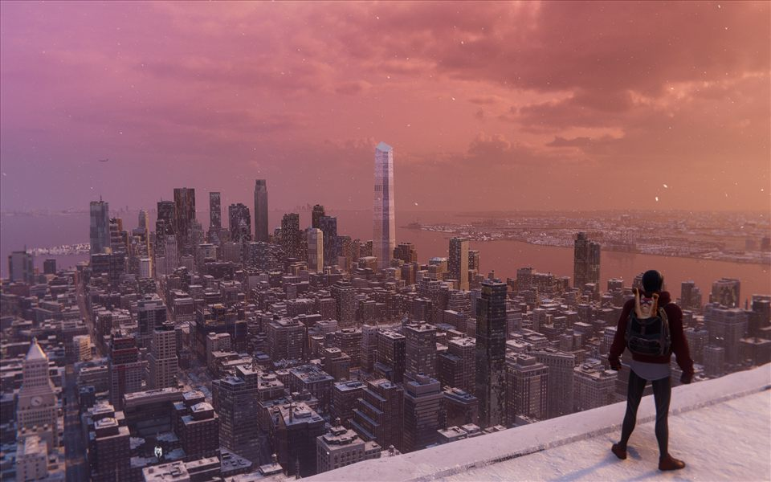
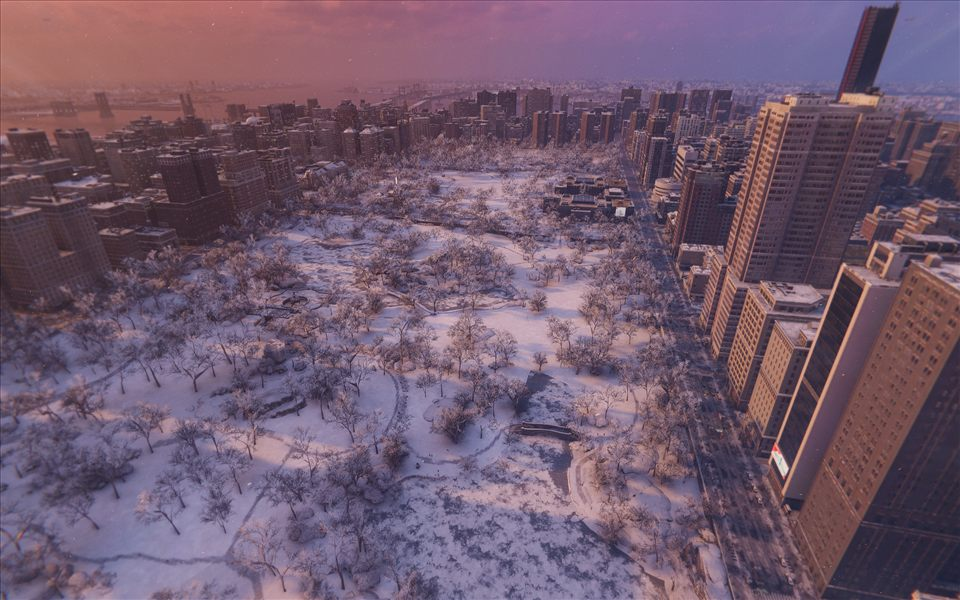
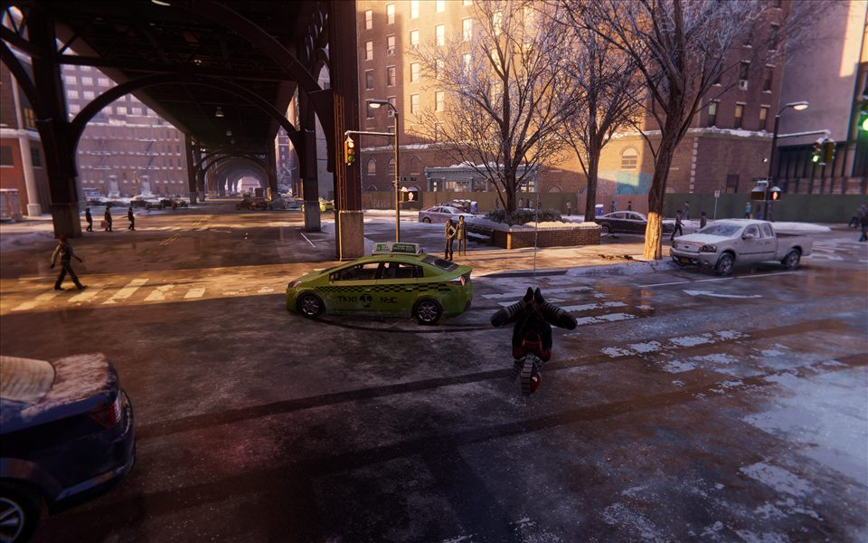
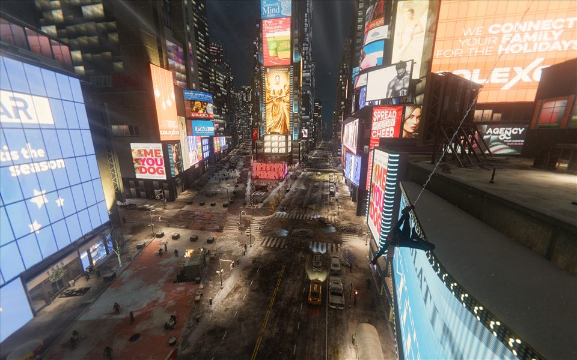
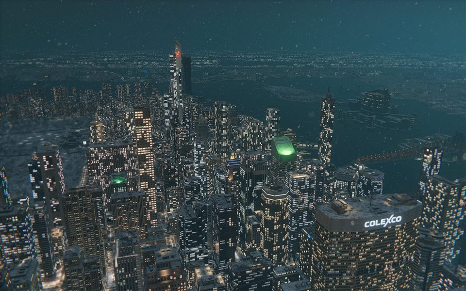
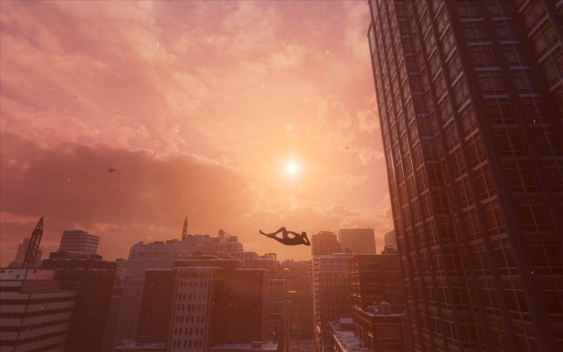
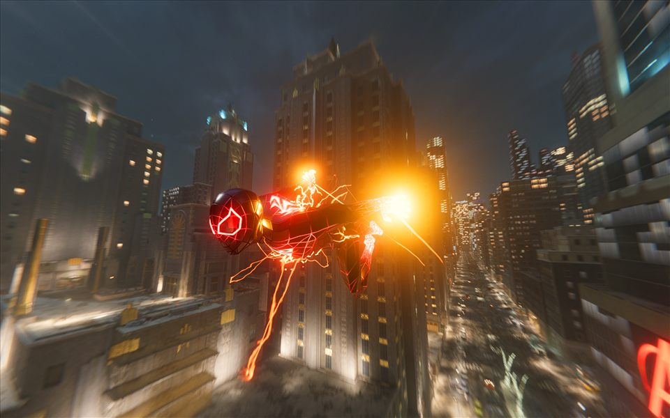
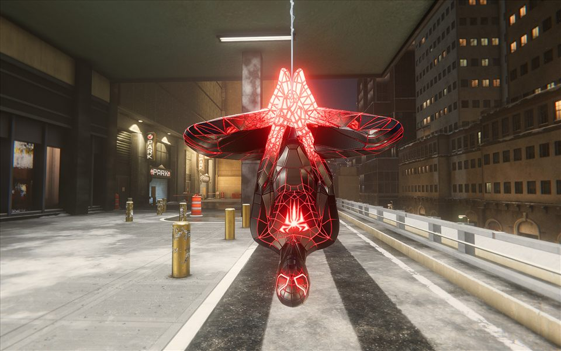
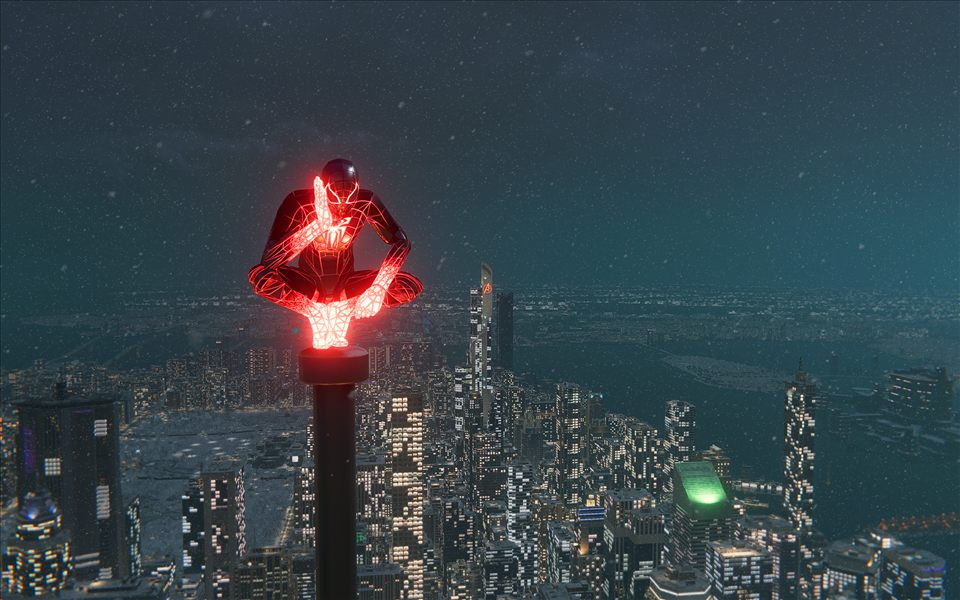
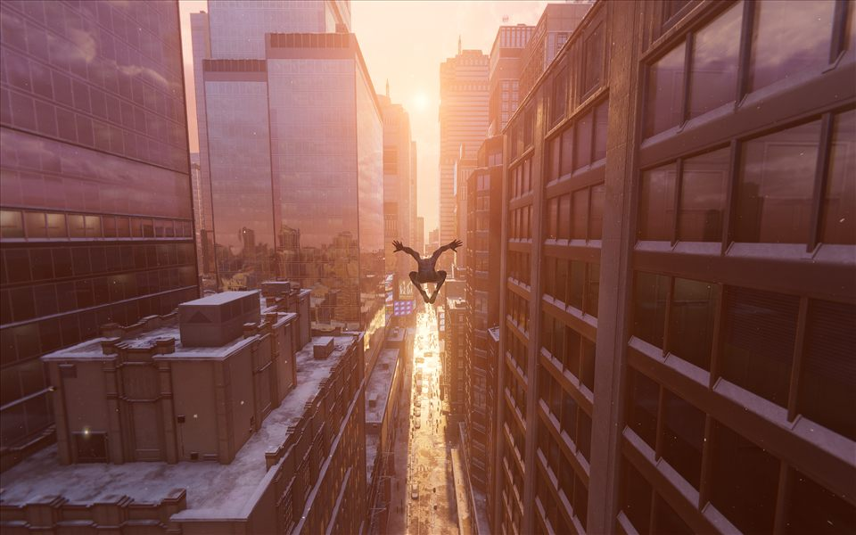

World 12 / Harlem
Marvel’s Spider-Man: Miles Morales
A winter city with its own rhythm, bright windows, and streets worth slowing down for.
The frames
11 photographs

Frame 001Open full size ↗


Frame 003Open full size ↗


Frame 005Open full size ↗

Frame 006Open full size ↗

Frame 007Open full size ↗

Frame 008Open full size ↗

Frame 009Open full size ↗

Frame 010Open full size ↗

Frame 011Open full size ↗